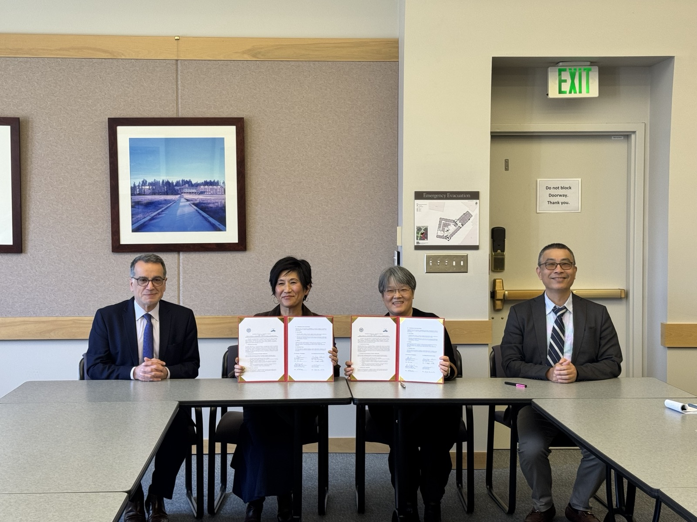
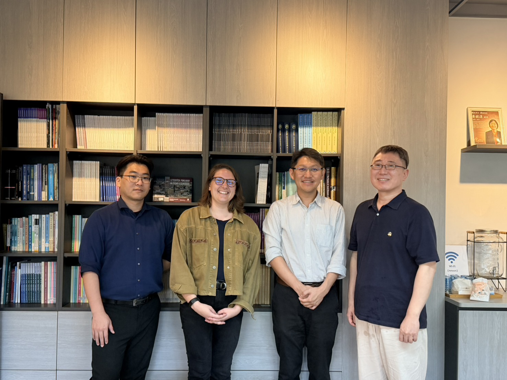
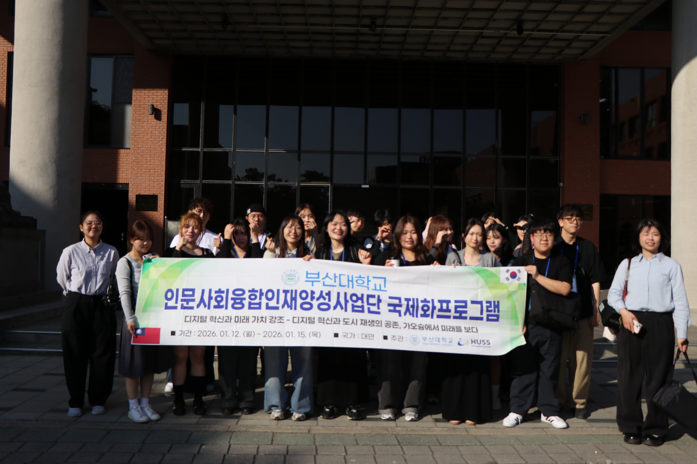
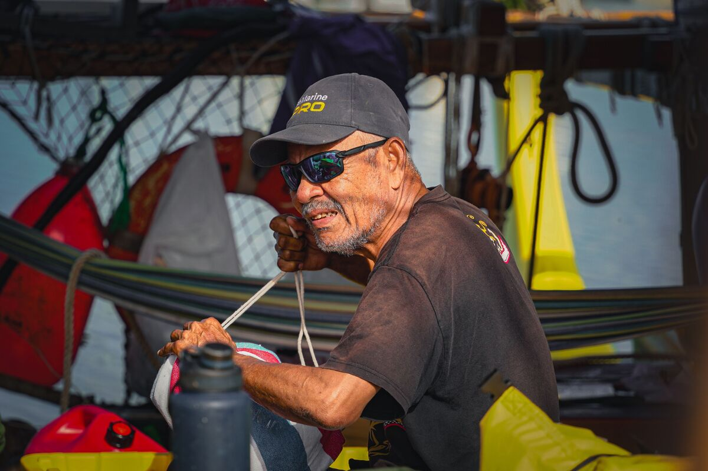

台英聯合辦學首例 中山大學全球公民權碩士學程揭牌
國立中山大學攜手倫敦大學亞非學院合作的「全球公民權碩士學位學程」於115年4月13日正式成立，並由本校李志鵬校長、教育部林伯樵主任秘書、英國在台辦事處何泰曦署長、欣巴巴集團黃炯輝董事長、本校郭志文副校長、許博欽副校長與本院陳美華院長攜手完成揭牌儀式。
閱讀全文國立中山大學攜手倫敦大學亞非學院合作的「全球公民權碩士學位學程」於115年4月13日正式成立，並由本校李志鵬校長、教育部林伯樵主任秘書、英國在台辦事處何泰曦署長、欣巴巴集團黃炯輝董事長、本校郭志文副校長、許博欽副校長與本院陳美華院長攜手完成揭牌儀式。
閱讀全文本院第十二任院長陳美華教授，已於115年4月22日專簽奉校長核定 ，獲聘續任為本院第十三任院長，任期自115年8月1日至118年7月31日止，全院師生同表慶賀。
閱讀全文
由本校郭志文副校長與社會科學院陳美華院長所帶領的學術訪問團，於115年4月4日與華盛頓大學教育學院簽署 MOU，簽約儀式並由我國外交部駐西雅圖辦事處林美呈總領事親臨致詞，見證台美高等教育深化合作之新紀元。
閱讀全文
本院政治所張晉赫教授邀請其母校美國Rice University的Center for Civic Leadership副主任Kelsey Ullom至本院參訪及交流。參訪期間，Kelsey Ullom與所上教授進行對談，在席間，本所準備了在地小吃紅豆餅以及大家都喜愛的珍珠奶茶與 Kelsey Ullom分享，希望能展現出南部特有的熱情。
閱讀全文
國立中山大學政治學研究所與韓國國立釜山大學人文共享系統（Humanities University Support System, HUSS）計畫團隊，近日正式簽署合作備忘錄（Memorandum of Understanding, MOU），象徵雙方在國際學術交流與跨領域合作上邁出重要一步。
閱讀全文你有沒有想過——有一天，站在講台上的會是你呢？重要的不是準備好了沒，而是你願不願意，給自己一次嘗試的機會。這條路不一定輕鬆，但可能，讓你成為影響他人的那個人 歡迎加入，一起走上教學之路！
報名網站亞洲政經與和平交流協會與東海大學政治學系於昨日（16日）共同舉辦座談會，並以「鄭習會、川習會與地緣政治發展」為題，敬邀本院方志恒教授等多位學者從國際關係與比較政治視角，分析兩場關鍵會晤對區域秩序與台灣角色的影響。 。
完整資訊【社會系提供】為響應世界地球日並回應全球淨零碳排關鍵議題，國立中山大學USR「邁向永續轉型與創生：城市共事館的全球在地實踐計畫」策劃「氣候、能源與公正轉型暨國際論壇」系列活動，邀請美國猶他州立大學社會科學學院助理教授Stacia Ryder，與中山大學社會系副教授邱花妹、社會創新研究所助理教授賴慧玲共同交流國際能源與環境政策。除課程互動、國際論壇交流，師生更實地走讀林園工業區，從多方角度反思社會發展與環境正義之間的密切關係。
完整資訊
【教育所提供】帛琉傳統帆船「無私分享號」（Alingano Maisu）於2026年2月15日自帛琉啟航，展開橫跨西太平洋、全程約6,200海里、為期約4個月的航行計畫。航線串聯帛琉、臺灣、日本沖繩、關島、塞班、薩塔瓦爾島及雅浦島等地。此次航程抵達臺灣期間，由國立中山大學偕同國立臺灣海洋大學、臺灣星空航海協會及中華民國帆船協會等航海社群共同規劃海上伴航行動，迎接這艘承載南島航海文化的傳統帆船進港。跨國交流首站已於3月1日航抵我國，目前泊靠屏東大鵬灣，並於3月7日上午11時駛入高雄港。。
閱讀全文聯合國出版研究報告《氣候變遷2022：衝擊、脆弱性、與調適》，其中專注於農業的第五章長達900頁，指出氣變遷已影響全球農業，生態農業是氣候調適與系統轉型的重要手段，不僅可提升農業的韌性，也在健康、公平及生態承載上提供多元益處。。
完整資訊